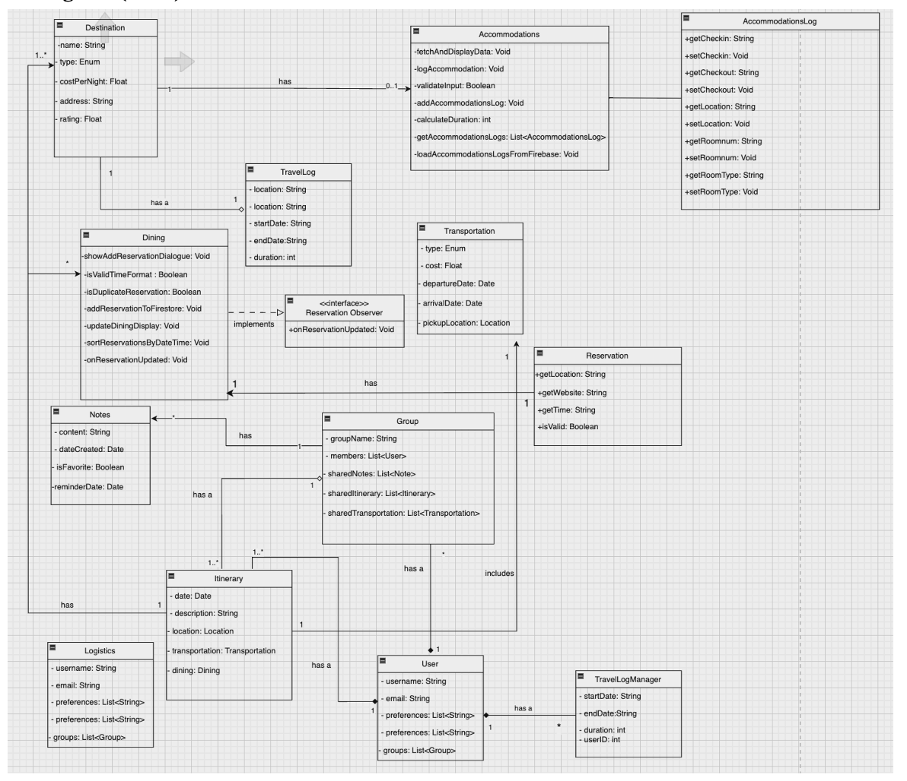

Introduction
This section explores the architectural design and implementation of design patterns for WanderSync.
Domain Model from Sprint 1
The following diagram represents the domain model of the application made during Sprint 1:
Revised Domain Model from Sprint 2
The following diagram represents the revised domain model of the application made during Sprint 2:
Use Case Diagram from Sprint 1
The following diagram outlines key interactions between users and the system:

Sequence Diagram from Sprint 2
The sequence diagrams illustrate the flow of processes within the system for one of the use cases shown in the use case diagram:
Sequence Diagram from Sprint 3
The sequence diagrams illustrate the flow of processes within the system for another one of the use cases shown in the use case diagram:

Design Class Diagram (DCD) from Sprint 3
This diagram provides a high-level view of the classes in the application:
MVVM Architecture
We decided to use the Model-View-ViewModel architecture. MVVM is an architectural pattern that advocates a clear separation of concerns in software development. Here, the Model represents data and logic, the View handles user interface management, and the ViewModel serves as a mediator between the View and the Model. The separation into such components allows for better maintainability, as changes can be made without affecting other parts of the application, which adds to testability and scalability.
Conclusion
The above diagrams illustrate how WanderSync's architecture is structured to support its functionality and user experience.
Credits for all diagrams go to all members of the group.